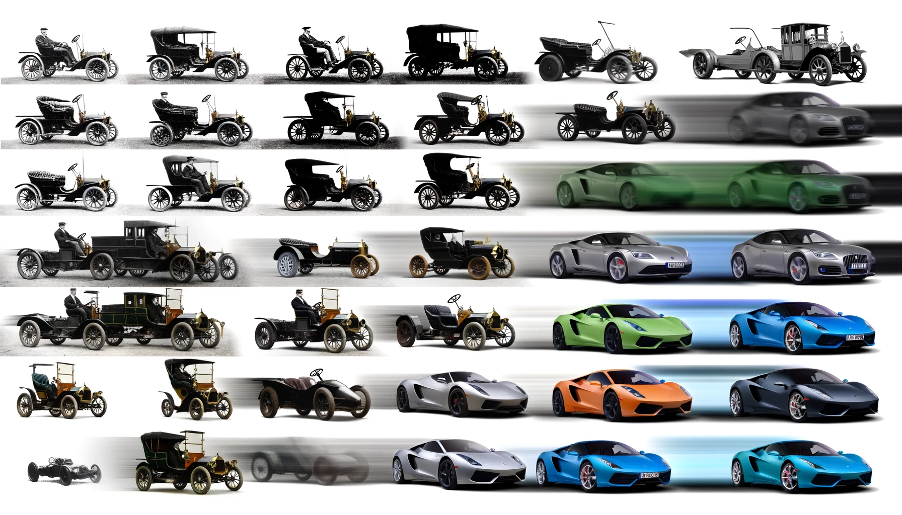
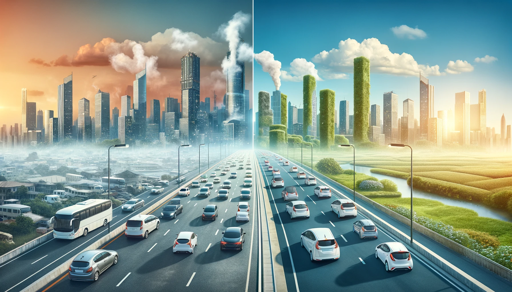
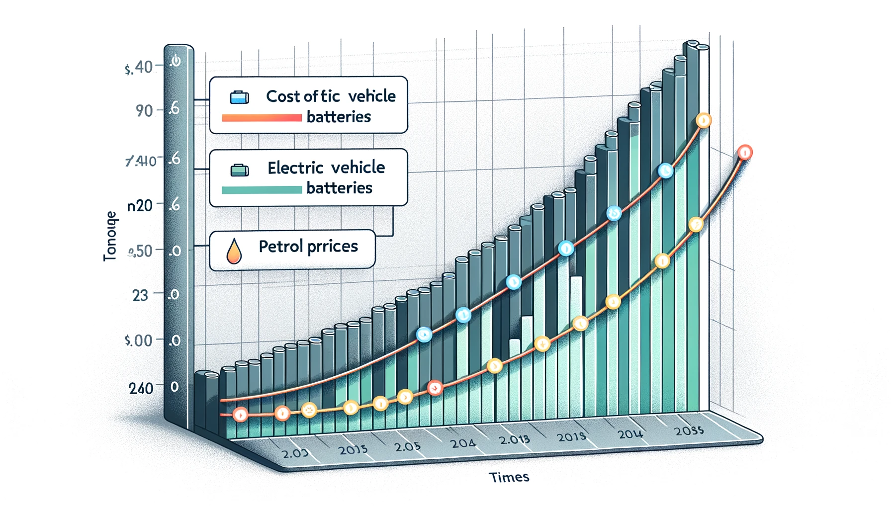
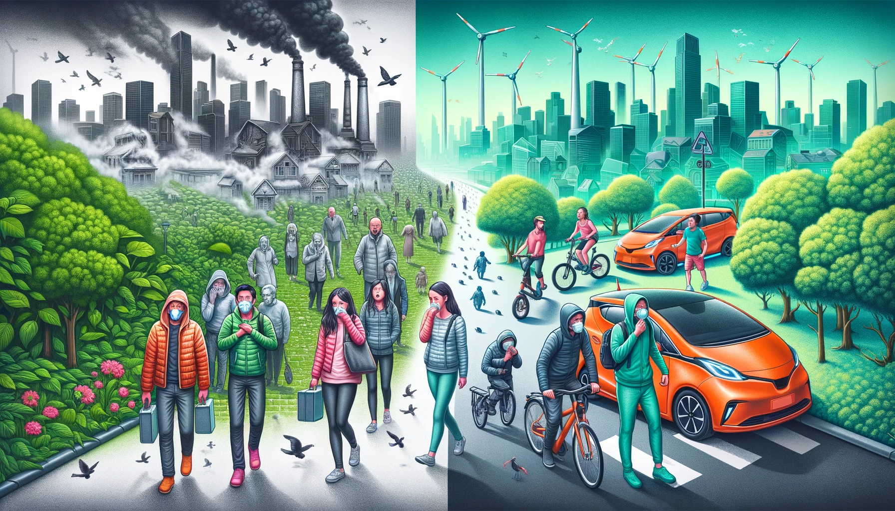
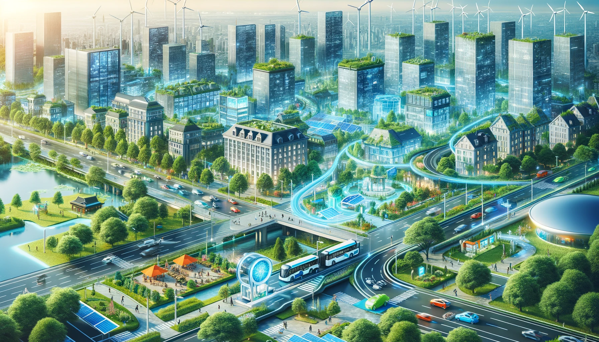

Historical Context and Evolution: The automobile industry has experienced a significant transformation since the advent of the first petrol-powered vehicles in the late 19th century. Initially regarded as a luxury for the elite, cars quickly became a staple of modern life, revolutionizing transportation and shaping global infrastructure and culture. The roar of a petrol engine and the iconic imagery of fuel-powered vehicles have dominated the automotive landscape for over a century. However, as the world grapples with the escalating consequences of climate change and depleting fossil fuel reserves, a shift is underway. The emergence of electric vehicles (EVs) heralds a new chapter in automotive history, promising a cleaner, more sustainable future. The transition from petrol cars to electric cars is not just a technological evolution but a response to the growing need for environmental stewardship and energy sustainability.

Environmental Impact and Sustainability Concerns
The global environmental impact of petrol cars cannot be understated. They are significant contributors to air pollution and greenhouse gas emissions, leading to climate change and a myriad of health problems. On the other hand, electric cars offer a greener alternative, boasting zero tailpipe emissions and the potential for a smaller carbon footprint when charged from renewable energy sources. The shift towards electric vehicles is fueled by the urgent need to reduce our environmental impact and move towards a more sustainable, eco-friendly mode of transportation.

Economic Factors and Market Dynamics
The economic implications of the petrol vs. electric car debate extend beyond the price tag of the vehicles themselves. Petrol cars, traditionally more affordable and with an established infrastructure, have long been the go-to choice for consumers. However, the tide is turning. The decreasing cost of batteries, government incentives, and the rising cost of petrol are making electric vehicles an increasingly viable option. Furthermore, the maintenance and operational costs of electric vehicles are typically lower than those of their petrol counterparts, adding to their economic appeal.

Societal and Health Implications
The impact of petrol and electric cars extends beyond environmental and economic considerations, deeply influencing societal health and well-being. Urban areas, heavily reliant on petrol vehicles, often struggle with air quality issues, leading to health problems ranging from respiratory conditions to cardiovascular diseases. Electric vehicles, offering a cleaner mode of transportation, have the potential to significantly improve urban air quality and public health. The adoption of electric vehicles also reflects a societal shift towards sustainability and an awareness of the health implications of our transportation choices.

Innovation and Future Prospects
The transition from petrol to electric cars is not just a change in power sources; it's a catalyst for broader technological innovation and future mobility solutions. Electric vehicles are at the forefront of integrating advanced technologies like autonomous driving, connectivity, and smart energy management. This shift is not merely about replacing the engine but reimagining the entire concept of personal and public transportation. As we stand at this pivotal juncture, the potential for innovation is boundless, promising a future where transportation is cleaner, smarter, and more integrated with the broader goals of sustainability and societal well-being.

1. What are the primary barriers to the widespread adoption of electric vehicles, and how can they be overcome?
The main barriers include high initial costs, range anxiety, limited charging infrastructure, and concerns about battery life. Overcoming these involves reducing costs through technology improvements and economies of scale, enhancing battery technology, expanding the charging network, and offering government incentives and education to shift public perception.
2. How do the lifetime environmental impacts of electric cars compare to those of petrol cars, considering the entire lifecycle from production to disposal?
Electric cars generally have a lower environmental impact over their lifetime compared to petrol cars. While EVs have a higher initial environmental cost due to battery production, their lack of tailpipe emissions and the potential to use renewable energy sources for charging make them more environmentally friendly over their entire lifecycle.
3. What are the economic implications of transitioning from petrol to electric vehicles for consumers, industries, and governments?
Consumers may benefit from lower operating costs of EVs. Industries must adapt to new technologies and supply chains, particularly in battery production and charging infrastructure. Governments might see shifts in tax revenue from fuel duties and need to invest in infrastructure and provide subsidies to encourage EV adoption.
4. How does the shift from petrol to electric vehicles impact global energy markets and geopolitics?
The shift can reduce dependency on oil, impacting oil-exporting countries and potentially leading to more stable energy markets. It may also increase demand for materials used in batteries, shifting geopolitical focus towards countries with rich deposits of these resources.
5. What role do government policies and incentives play in accelerating the transition to electric vehicles?
Government policies and incentives are crucial in promoting EV adoption. This can include tax rebates, subsidies for EV purchases, investment in charging infrastructure, and regulations encouraging or mandating the shift to cleaner vehicles.
6. How does the infrastructure for electric vehicles, such as charging stations, compare to that of petrol cars, and what improvements are needed?
EV charging infrastructure is less developed than the petrol refueling network. Significant investment is needed to increase the number of charging stations, reduce charging time, and ensure the availability of fast-charging stations along major highways and in urban areas.
7. What advancements in battery technology are necessary to make electric vehicles more viable and competitive?
Key advancements needed include increasing energy density to improve range, reducing charging time, lowering costs, ensuring the longevity of batteries, and making them more sustainable through advancements in materials and recycling methods.
8. How can electric vehicles be integrated into the broader ecosystem of renewable energy and smart cities?
EVs can be integrated into smart city and renewable energy ecosystems through smart charging (aligning charging times with renewable energy availability), vehicle-to-grid technologies (allowing cars to return energy to the grid), and ensuring that the infrastructure for EVs is powered by renewable sources.
9. What are the social and health benefits of transitioning to electric vehicles, and how can they be maximized?
Benefits include improved air quality, leading to better public health outcomes, reduced noise pollution, and the creation of a more sustainable environment. These can be maximized by ensuring a rapid and widespread transition to EVs, supported by policies and infrastructure that encourage their use.
10. How do consumer perceptions and cultural attitudes towards petrol and electric cars influence the pace of transition, and how can positive change be fostered?
Consumer perceptions and cultural attitudes play a significant role in the adoption of EVs. Overcoming misconceptions about range, performance, and cost is crucial. Positive change can be fostered through education, exposure to EVs (e.g., test drives), and showcasing the benefits and feasibility of EVs through marketing, incentives, and showcasing success stories.